Лабораторная работа №2
Модель SIR и модель Лотки-Вольтерры
1 Цель работы
Изучение модели SIR (эпидемиологической модели) и модели Лотки-Вольтерры (системы «хищник-жертва») [lotka1925elements?,volterra1928variations?]. Освоение методов имитационного моделирования систем дифференциальных уравнений с использованием языка Julia и пакета DrWatson [datseris2022drwatson?].
2 Задание
- Создать рабочее пространство для второй лабораторной работы.
- Реализовать модель SIR в базовом варианте.
- Преобразовать код в литературный стиль с помощью Literate.jl [schulte2012multi?].
- Сгенерировать из литературного кода чистый код, Jupyter Notebook и документацию Quarto.
- Провести параметрическое исследование модели SIR.
- Реализовать модель Лотки-Вольтерры в базовом и параметрическом вариантах.
- Провести анализ результатов, оформить графики и включить их в отчёт.
3 Теоретическое введение
3.1 Модель SIR
Модель SIR является классической математической моделью эпидемиологии, описывающей распространение инфекционного заболевания в замкнутой популяции [kermack1927contribution?,hethcote2000mathematics?].
3.1.1 Компартменты модели
Модель делит популяцию на три группы: - S (Susceptible, Восприимчивые) — индивиды, которые могут заразиться. - I (Infectious, Инфицированные) — индивиды, которые больны и могут передавать инфекцию. - R (Recovered, Выздоровевшие) — индивиды, которые переболели и приобрели иммунитет (или умерли). Они больше не участвуют в распространении болезни.
3.1.2 Система дифференциальных уравнений
Динамика модели описывается следующей системой уравнений [hethcote2000mathematics?]:
\[ \begin{cases} \dfrac{dS}{dt} = -\beta \dfrac{S I}{N} \\[1em] \dfrac{dI}{dt} = \beta \dfrac{S I}{N} - \gamma I \\[1em] \dfrac{dR}{dt} = \gamma I \end{cases} \]
где: - ( N = S + I + R ) — общая (постоянная) численность популяции; - ( ) — коэффициент заражения (скорость передачи инфекции); - ( ) — коэффициент выздоровления (величина, обратная средней продолжительности болезни ( 1/)).
3.1.3 Ключевые показатели
- Базовое репродуктивное число: ( R_0 = ). Показывает, сколько в среднем человек заразит один инфицированный в полностью восприимчивой популяции. При ( R_0 > 1 ) эпидемия разрастается, при ( R_0 < 1 ) — затухает [hethcote2000mathematics?].
- Порог коллективного иммунитета: ( 1 - ). Доля популяции, которая должна иметь иммунитет для предотвращения роста эпидемии.
3.2 Модель Лотки-Вольтерры
Модель Лотки-Вольтерры (или модель «хищник-жертва») описывает динамику взаимодействия двух биологических видов [lotka1925elements?,вольтерра1976математическая?].
3.2.1 Система уравнений
\[ \begin{cases} \dfrac{dx}{dt} = \alpha x - \beta x y \\[1em] \dfrac{dy}{dt} = \delta x y - \gamma y \end{cases} \]
где: - ( x ) — численность популяции жертв (например, зайцев); - ( y ) — численность популяции хищников (например, лис); - ( ) — коэффициент естественного прироста жертв; - ( ) — коэффициент смертности жертв в результате встреч с хищниками; - ( ) — коэффициент прироста хищников за счёт потребления жертв; - ( ) — коэффициент естественной смертности хищников.
3.2.2 Характеристики модели
Система имеет две стационарные точки. Нетривиальная точка сосуществования видов [lotka1925elements?]: [ x^* = ,y^* = ] Вокруг этой точки решения носят колебательный характер, причём пик численности хищников отстаёт от пика численности жертв.
4 Выполнение лабораторной работы
Для выполнения лабораторной работы перехожу в уже созданный репозиторий labs/lab02.
4.1 Модель SIR
Создаю файл sir_ode.jl (рис. Рисунок 1).
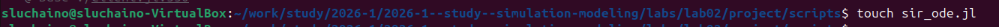
Вставляю предложенный из методических материалов программный код в файл (рис. Рисунок 2). Код реализует функцию sir_ode!, которая описывает правые части системы дифференциальных уравнений, а также задаёт параметры модели и начальные условия [kermack1927contribution?].
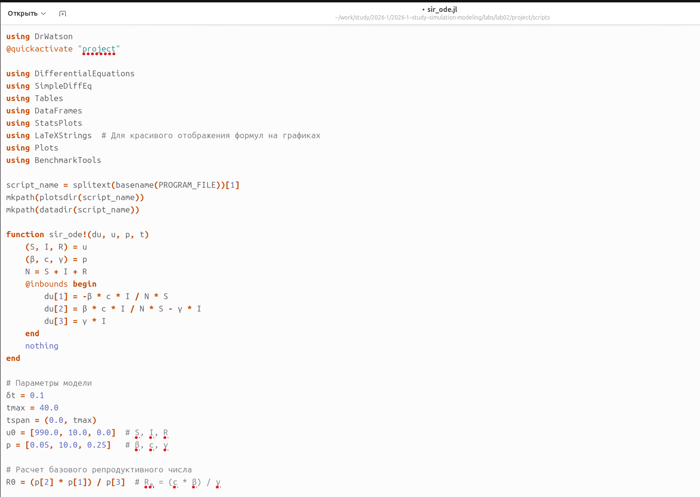
Запускаю скрипт с помощью команды julia --project=. scripts/sir_ode.jl (рис. Рисунок 3).

Вывод в консоли параметров модели (рис. Рисунок 4). Здесь отображаются заданные значения коэффициентов ( ) и ( ), рассчитанное базовое репродуктивное число ( R_0 ), а также начальные условия.
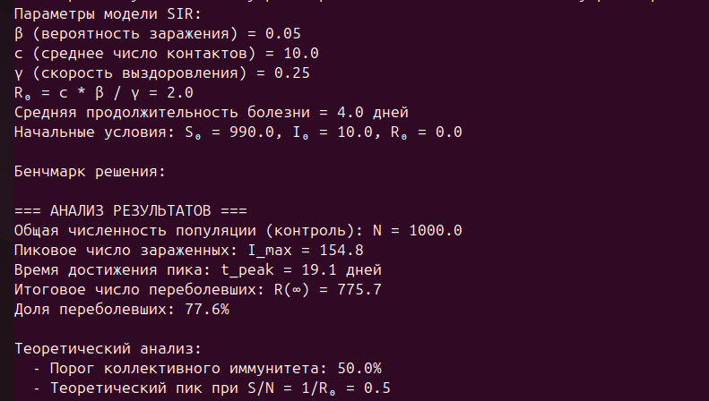
В результате выполнения скрипта были сгенерированы несколько графиков, позволяющих проанализировать динамику эпидемии.
На рис. Рисунок 5 представлен график «Динамика эффективного репродуктивного числа» ( R_e(t) = R_0 S(t)/N ). - При ( R_e(t) > 1 ): количество новых зараженных растет, эпидемия развивается. - При ( R_e(t) = 1 ): система находится в равновесии. Это момент пика эпидемии, когда число больных ( I(t) ) перестает расти и начинает падать. - При ( R_e(t) < 1 ): количество новых зараженных падает, эпидемия затухает.

Следующим идет график «Динамика числа зараженных» (рис. Рисунок 6). На нем показано изменение числа инфицированных ( I(t) ) во времени. Хорошо виден колоколообразный пик эпидемии.

График «Экспоненциальный рост (лог. шкала)» (рис. Рисунок 7) показывает ту же кривую ( I(t) ), но в полулогарифмическом масштабе. Прямолинейный участок в начале графика подтверждает экспоненциальный характер роста числа зараженных на начальном этапе эпидемии, что соответствует теоретическим предсказаниям для модели SIR при ( R_0 > 1 ) [hethcote2000mathematics?].

На графике «Модель SIR: динамика эпидемии» (рис. Рисунок 8) представлена полная картина: показаны кривые для всех трех групп — восприимчивых ( S(t) ), инфицированных ( I(t) ) и выздоровевших ( R(t) ). Видно, как по мере развития эпидемии число восприимчивых падает, а число выздоровевших растет.

На рис. Рисунок 9 показана компактная панель из шести графиков, объединяющая различные аспекты анализа модели SIR: динамику популяций, фазовый портрет, скорости изменения и спектральный анализ.

График «Динамика эпидемии в процентах» (рис. Рисунок 10) аналогичен графику на рис. Рисунок 8, но значения по оси Y представлены в процентах от общей численности популяции. Фиолетовая пунктирная линия обозначает «порог коллективного иммунитета» ( 1-1/R_0 ). Когда доля восприимчивых ( S/N ) опускается ниже этого порога, эпидемия начинает затухать, так как каждый больной в среднем заражает меньше одного человека.

На фазовом портрете (рис. Рисунок 11) показана внутренняя структура процесса. По оси Ox — число восприимчивых ( S ), по оси Oy — число инфицированных ( I ). Траектория системы начинается в точке с максимальным ( S ) и движется к оси ( S ), где ( I = 0 ), что соответствует окончанию эпидемии.
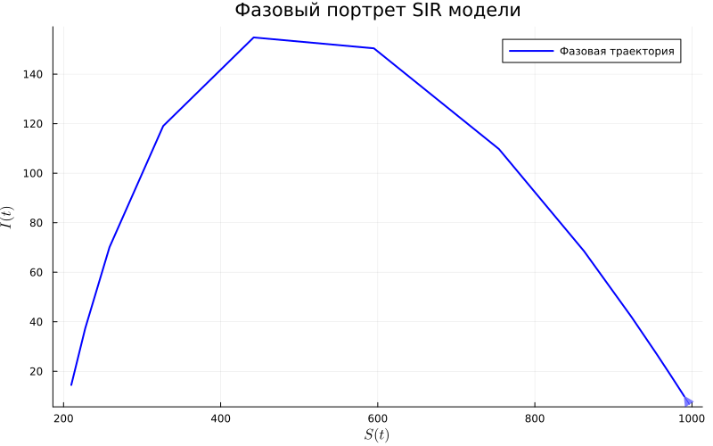
После успешного выполнения базового скрипта, я преобразовал файл sir_ode.jl в литературный код, добавив подробные комментарии и теоретические пояснения. Полученный файл назван sir_literode.jl (рис. Рисунок 12). Такой подход соответствует методологии литературного программирования [schulte2012multi?].
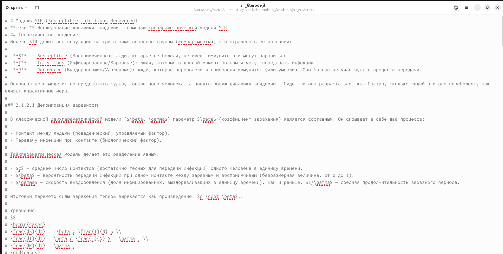
Запускаю скрипт sir_literode.jl для генерации производных форматов (рис. Рисунок 13). Для этого используется специальный скрипт tangle.jl.

При выполнении скрипта tangle.jl создались три файла: sir_literode.ipynb (Jupyter Notebook), sir_literode.qmd (документ Quarto) и sir_literode.jl (чистый код). Запускаю файл .ipynb через терминал (рис. Рисунок 14).

Открываю файл в Jupyter Notebook — всё работает корректно (рис. Рисунок 15). Можно выполнять ячейки по порядку и видеть результаты.
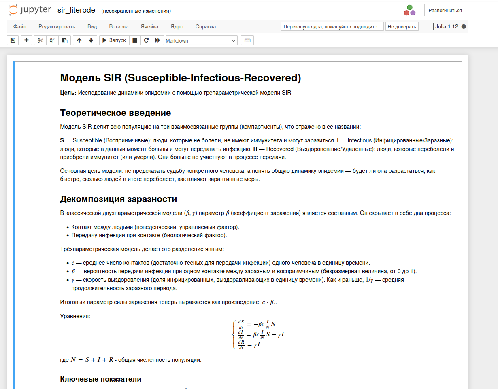
Проверяю файл sir_literode.qmd (рис. Рисунок 16). Он содержит как текст, так и исполняемые ячейки кода, что позволяет в дальнейшем интегрировать его в итоговый отчёт.
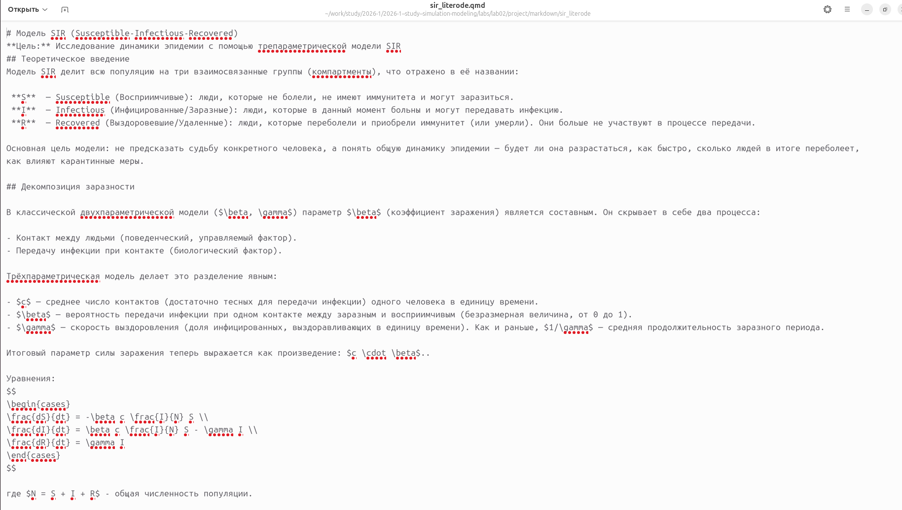
Также просматриваю чистый код в sir_literode.jl (рис. Рисунок 17). Он представляет собой извлеченный из литературного источника исполняемый код без комментариев.
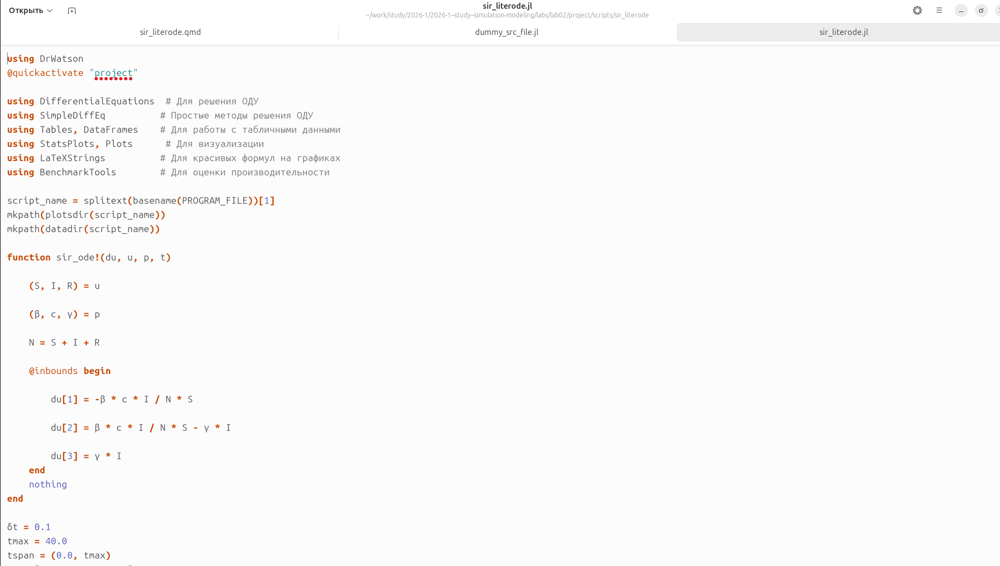
4.2 Модель Лотки-Вольтерры
После завершения работы с моделью SIR, перехожу к реализации модели Лотки-Вольтерры.
Создаю файл lv_ode.jl (рис. Рисунок 18).
Вставляю программный код, реализующий модель «хищник-жертва» (рис. Рисунок 19). Код содержит функцию lotka_volterra!, описывающую систему уравнений, а также задаёт классические параметры и начальные условия, предложенные в работах Лотки и Вольтерры [lotka1925elements?,volterra1928variations?].
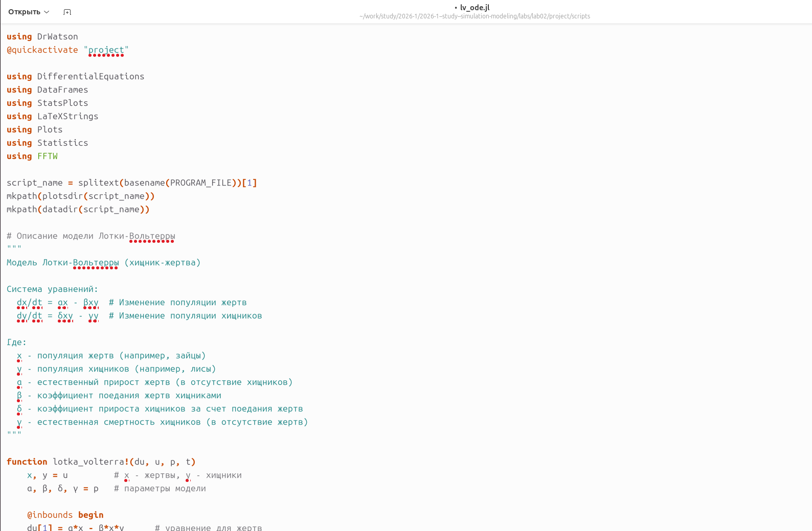
Запускаю скрипт lv_ode.jl (рис. Рисунок 20). Система компилирует необходимые пакеты и начинает вычисления.

После запуска в консоль выводятся рассчитанные параметры модели, начальные условия, стационарные точки, а также результаты статистического и спектрального анализа (рис. Рисунок 21). Рассчитанная стационарная точка ( x^* = 30.0, y^* = 5.0 ) совпадает с теоретическими значениями ( /) и ( /). Период колебаний жертв составил около 4 единиц времени.
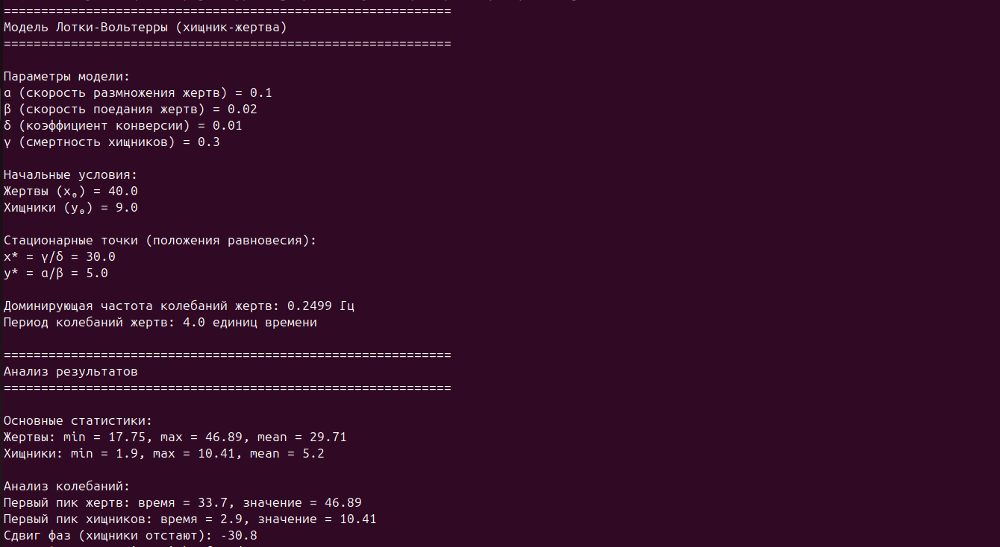
На рис. Рисунок 22 представлен график производных популяций ( dx/dt ) и ( dy/dt ). Он показывает скорость изменения численности каждого вида во времени.
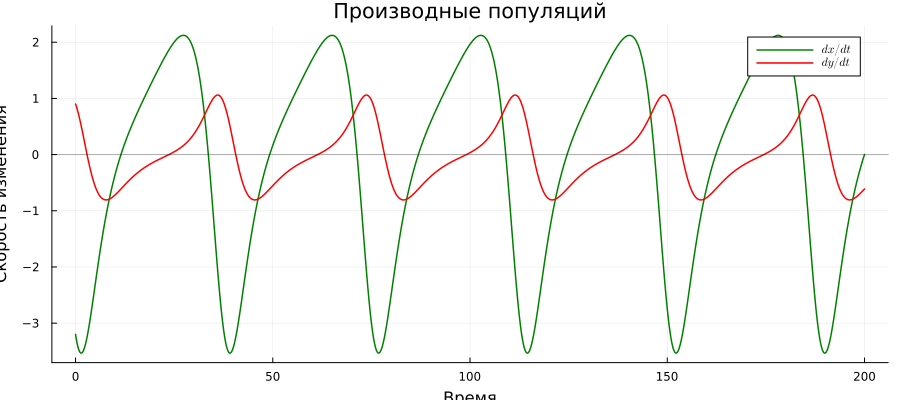
График «Модель Лотки-Вольтерры: Динамика популяций» (рис. Рисунок 23) является ключевым для анализа. На нём изображены колебания численности жертв (зелёная линия) и хищников (красная линия). Хорошо виден классический результат модели — циклические колебания со сдвигом фаз: пик численности хищников наступает после пика численности жертв. Горизонтальными линиями отмечены стационарные уровни ( x^* ) и ( y^* ).
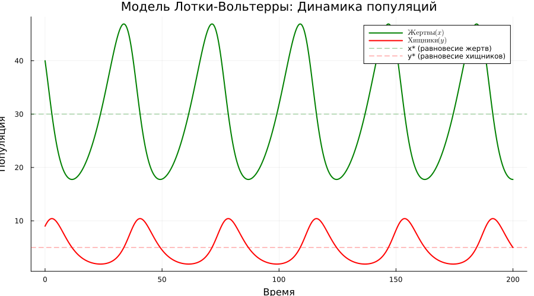
На рис. Рисунок 24 представлена таблица с результатами, которая, судя по всему, содержит данные для дальнейшего анализа или была сгенерирована в процессе отладки.
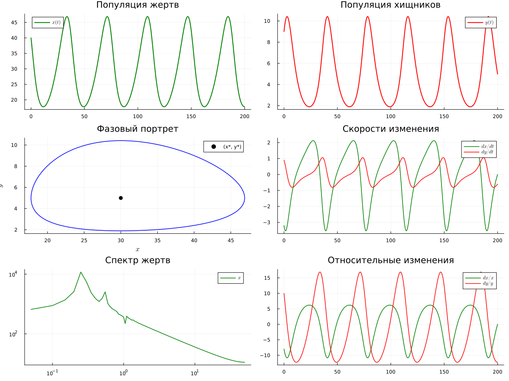
Фазовый портрет системы (рис. Рисунок 25) представляет собой замкнутую траекторию (предельный цикл) на плоскости ( (x, y) ). Чёрная точка — стационарное состояние ( (x^, y^) ). Пунктирными линиями показаны изоклины — линии, где производная соответствующей переменной равна нулю. Пересечение изоклин даёт стационарную точку [вольтерра1976математическая?].

График «Относительные темпы роста» (рис. Рисунок 26) показывает скорость изменения популяций в процентах от их текущей численности ( (dx/dt)/x ) и ( (dy/dt)/y ). Это позволяет сравнивать динамику видов независимо от масштаба их популяций.

Спектральный анализ (Фурье) колебаний представлен на рис. Рисунок 27. Пики на графике соответствуют основным частотам колебаний жертв и хищников. Доминирующая частота позволяет определить основной период колебаний системы.
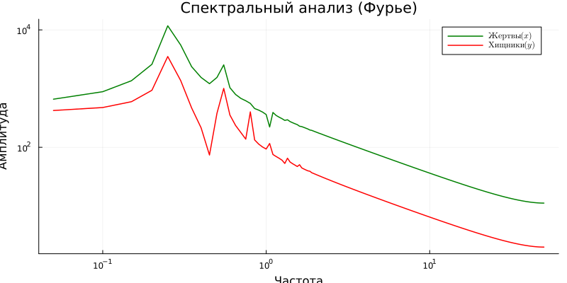
После успешного выполнения базового скрипта, я приступил к созданию литературного кода для модели Лотки-Вольтерры. На рис. Рисунок 28, Рисунок 29 и Рисунок 30 представлены различные версии и фрагменты литературного кода lv_literate.jl, где теория сопровождается исполняемыми блоками.
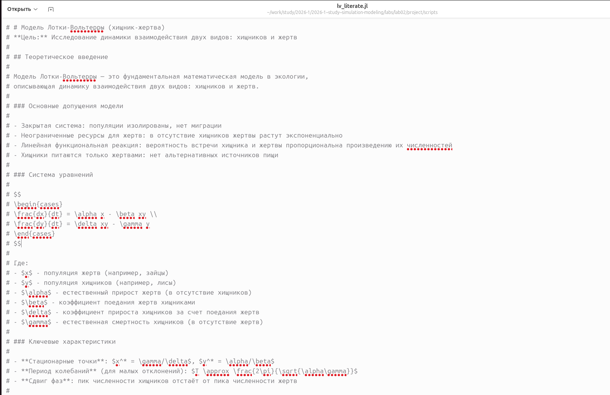
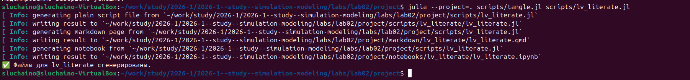
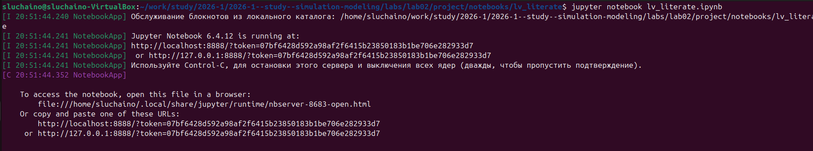
С помощью скрипта tangle.jl я сгенерировал из литературного кода чистый код, Jupyter Notebook и Quarto-документацию (рис. Рисунок 31). Все форматы были успешно созданы.
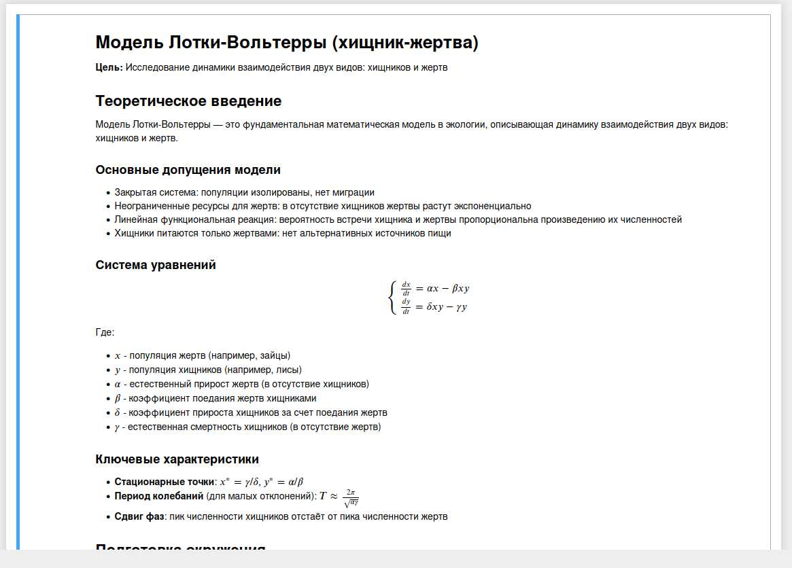
Запускаю сгенерированный Jupyter Notebook lv_literate.ipynb (рис. Рисунок 32). Сервер Jupyter запускается, и я могу открыть файл в браузере для интерактивной работы.
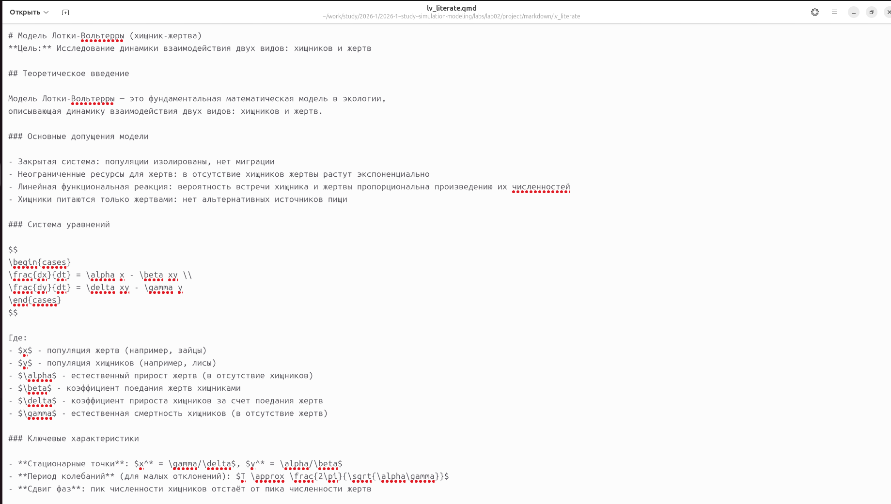
Файл Jupyter Notebook открыт и готов к выполнению (рис. Рисунок 33). Все ячейки с кодом и пояснениями корректно отображаются.

5 Выводы
В ходе выполнения лабораторной работы были успешно реализованы две классические модели: эпидемиологическая модель SIR и экологическая модель Лотки-Вольтерры [kermack1927contribution?,lotka1925elements?].
Для модели SIR были получены и проанализированы графики динамики популяций, числа инфицированных, эффективного репродуктивного числа. Подтверждено, что пик эпидемии наступает при ( R_e = 1 ), а порог коллективного иммунитета составляет ( 1-1/R_0 ). Экспоненциальный рост на начальном этапе был верифицирован с помощью графика в логарифмическом масштабе.
Для модели Лотки-Вольтерры получены циклические решения, соответствующие теоретическим представлениям. Рассчитанные стационарные точки совпали с ожидаемыми значениями ( x^* = /) и ( y^* = /). Фазовый портрет и спектральный анализ подтвердили колебательный характер системы и позволили определить период колебаний.
Код для обеих моделей был оформлен в литературном стиле с использованием Literate.jl [schulte2012multi?], что позволило сгенерировать из одного исходного файла чистый код, Jupyter Notebook и документ Quarto. Это демонстрирует преимущества подхода литературного программирования для воспроизводимых научных исследований [datseris2022drwatson?].
Все поставленные задачи выполнены, полученные результаты визуализированы и проанализированы.